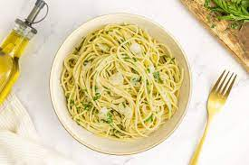

Aglio e Olio

Description
Aglio e Olio, translating to "garlic and oil" in Italian, is a simple yet flavorful pasta dish that exemplifies the beauty of minimalist cooking. With just a handful of ingredients, including garlic, olive oil, parsley, and red pepper flakes, this dish delivers a burst of flavor that will tantalize your taste buds. It's perfect for a quick weeknight dinner or as a side dish to complement any meal.
Ingredients
- 350g spaghetti or any long pasta of your choice
- 6 gloves of garlic
- 80ml extra virgin oil
- 1 teaspon of red pepper
- Salt to taste
- Fresh parsley
- Fresh parmesan (optional)
- lemon zest, for garnish (optional)
Instrucions
- Cook the Pasta: Bring a large pot of salted water to a boil. Cook the spaghetti according to the package instructions until al dente. Reserve about 1/2 cup of pasta water, then drain the spaghetti and set aside.
- Prepare the Garlic Oil: While the pasta is cooking, heat the olive oil in a large skillet over medium heat. Add the sliced garlic and red pepper flakes. Cook, stirring constantly, until the garlic is fragrant and just starting to turn golden, about 1-2 minutes. Be careful not to let the garlic burn.
- Combine Pasta and Garlic Oil: Add the cooked spaghetti to the skillet with the garlic oil. Toss well to coat the pasta evenly with the oil. If the pasta seems too dry, add a splash of the reserved pasta water to loosen it up.
- Season And Garnish: Season the pasta with salt and freshly ground black pepper to taste. Stir in the chopped parsley, reserving some for garnish if desired. Toss everything together until well combined.
Serve: Transfer the aglio e olio pasta to serving plates or a large serving dish. If desired, sprinkle some grated Parmesan cheese on top and garnish with additional chopped parsley and lemon zest for extra flavor. Serve immediately, and enjoy the simple yet delicious flavors of this classic Italian dish!
Aglio e Olio is best served immediately while it's hot and freshly prepared. Enjoy the vibrant flavors and comforting simplicity of this timeless pasta dish!